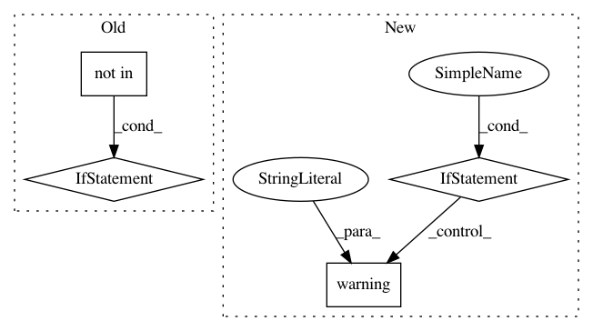

bc6826014454244195781a2b64e2302a628bc93d,python/ray/serve/api.py,Client,get_handle,#Client#Any#Any#Any#,413
Before Change
"Try getting client.get_handle(.., sync=False) to get better "
"performance.")
if endpoint_name not in self._handle_cache:
handle = RayServeHandle(self._controller, endpoint_name, sync=sync)
self._handle_cache[endpoint_name] = handle
return self._handle_cache[endpoint_name]
def start(detached: bool = False,
After Change
"performance. Learn more at https://docs.ray.io/en/master/"
"serve/advanced.html//sync-and-async-handles")
if not asyncio.get_event_loop().is_running() and not sync:
logger.warning(
"You are retrieving an async handle outside an asyncio loop. "
"You should make sure client.get_handle is called inside a "
"running event loop. Or call client.get_handle(.., sync=True) "
"to create sync handle. Learn more at https://docs.ray.io/en/"
"master/serve/advanced.html//sync-and-async-handles")
if sync:
handle = RayServeSyncHandle(
self._get_proxied_router(sync=sync), endpoint_name)
else:
In pattern: SUPERPATTERN
Frequency: 3
Non-data size: 4
Instances
Project Name: ray-project/ray
Commit Name: bc6826014454244195781a2b64e2302a628bc93d
Time: 2020-12-22
Author: simon.mo@hey.com
File Name: python/ray/serve/api.py
Class Name: Client
Method Name: get_handle
Project Name: ray-project/ray
Commit Name: 2cb9cfb2b6b1d2b5a14b543310761d64b76b8508
Time: 2020-04-12
Author: ed.nmi.oakes@gmail.com
File Name: python/ray/serve/http_proxy.py
Class Name: HTTPProxy
Method Name: __call__
Project Name: uber/ludwig
Commit Name: 3e2f276459f976054b5c2ab8c55be994170345da
Time: 2020-08-27
Author: carlo.grisetti@dsgroup.it
File Name: ludwig/utils/defaults.py
Class Name:
Method Name: merge_with_defaults